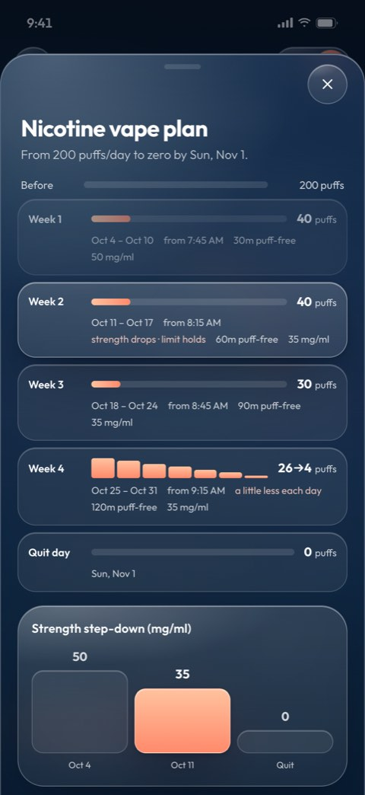
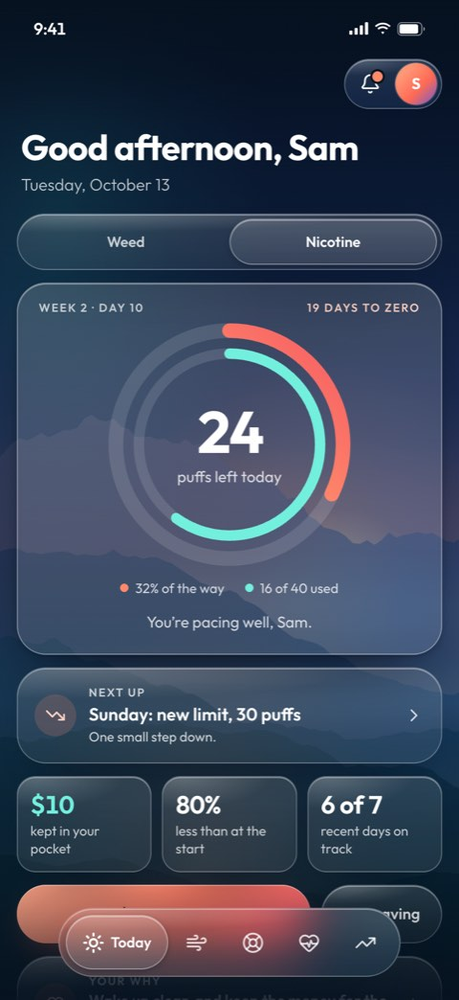
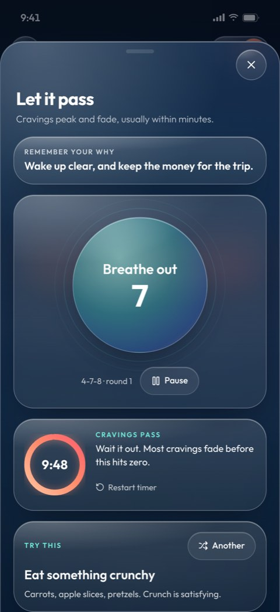
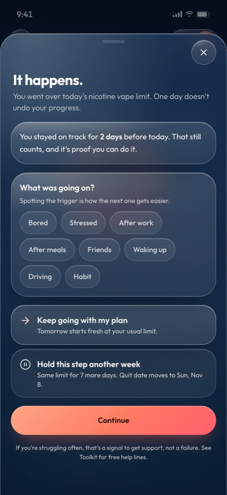

See every step before you start
Your plan shows each week’s limit, the earliest time for your first use, and the day you reach zero. With nicotine, strength steps down in its own weeks, never in the same week as your limit.

Taper builds a plan from what you use now and lowers it a little each week, down to zero on a date you choose.
Download on the App StoreComing to Android
Free to download for iPhone. The first week of your plan is free, then $29.99 a year. Cancel anytime.
Taper is on iPhone for now. An Android version is on the way, with no date yet. When it’s ready, the link will be right here.

You’ve probably tried stopping all at once. The first days hit hardest: the cravings, the short fuse, the nights you can’t sleep.
Then one bad evening you pick it back up, and it feels like you’re back at day one.
It usually isn’t about willpower. It’s the withdrawal, and the feeling that one slip wipes out everything. Taper is built around both.
Weed, THC vapes, nicotine vapes, nicotine pouches or cigarettes, and about how much on a usual day. Not sure? Log for a few days first and let Taper measure.
Your daily amount drops a little each week, your first use of the day moves later, and you choose the quit date, 2 to 6 weeks out.
Tap to log, glance at today’s limit, and open the craving toolkit when it gets hard. Rough week? Hold a step.
Your plan shows each week’s limit, the earliest time for your first use, and the day you reach zero. With nicotine, strength steps down in its own weeks, never in the same week as your limit.

Breathe along with a 4-7-8 guide, start a 10-minute timer, and see the reason you wrote down. The craving toolkit and help lines are always free.

Go over your limit and Taper asks what was going on, keeps the days you already did, and lets you carry on or hold your step for another week.

No account, no ads, no tracking. Your plan, logs and check-ins are saved only on your iPhone, and Taper has no server to send them to. Its App Store privacy label reads Data Not Collected.
Taper is general wellness support, not medical advice. If you’re pregnant, take prescription medicine, or have a heart or mental health condition, talk to a doctor or pharmacist before you change how much you use.
If withdrawal feels severe or your mood drops, get help. Free help lines are built into the app. In a crisis, call your local emergency number, or in the US call or text 988.
It isn’t a medical treatment, and it isn’t for alcohol, benzodiazepines or opioids, where stopping without medical help can be dangerous.
It isn’t a shortcut, either. On average, cutting down first and quitting all at once work about as well. Taper is for people who’d rather get to zero step by step. The research behind Taper
[PLACEHOLDER: App Store rating and number of ratings. Add only once Taper has real ratings.]
[PLACEHOLDER: one to three short quotes from real users who gave written permission, first name only.]
Taper is free to download. The measuring days before your plan, the sample data, and the craving toolkit with help lines are always free.
The full plan needs Taper Annual. The first week is free, then it’s $29.99 a year in the US (prices vary by country). It renews unless you cancel at least 24 hours before the free week or the year ends, and you can cancel any time in Taper’s Settings or in your iPhone’s Subscriptions.
Cutting down before you quit is a well-studied approach, and on average it works about as well as stopping all at once. Taper is general wellness support, not medical advice.
Talk to a doctor or pharmacist first if you’re pregnant, take prescription medicine, or have a heart or mental health condition. Get help if withdrawal feels severe or your mood drops. Taper isn’t for alcohol, benzodiazepines or opioids.
That’s where every Taper plan ends: zero, on a quit date you pick 2 to 6 weeks out. You can start with 3 to 7 measuring days, logging as usual with no limits, so your plan begins from your real numbers.
If you’d rather cut down and stay there, Taper isn’t built for that.
It happens, and it doesn’t wipe out your progress. Taper asks what was going on, shows your own plan for that moment, and lets you keep going or hold your current step for another week (up to twice per plan).
After quit day, you go straight back to zero, and the days you already had still count. If use has come back on several days, you can ease down again with a short taper.
Yes. Your plan, logs, check-ins and reminders all live on your phone, with no account and no internet needed. Taper only goes online when you subscribe or restore a purchase, which Apple handles.
Weed (in grams or hits), THC vapes, nicotine vapes, nicotine pouches and cigarettes. You can taper more than one at once, and each gets its own plan.
Taper is on iPhone for now. An Android version is on the way, with no date yet. When it’s ready, the download link will be on this page.
Tell Taper what you use and see your whole plan before you pay anything.
Download on the App StoreComing to Android
Free to download for iPhone. The first week of your plan is free, then $29.99 a year. Cancel anytime.
Taper is on iPhone for now. An Android version is on the way, with no date yet. When it’s ready, the link will be right here.